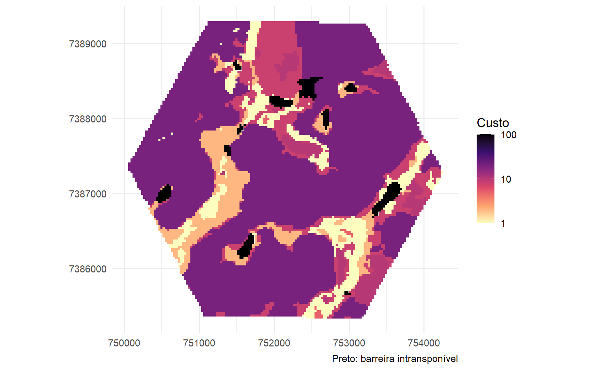
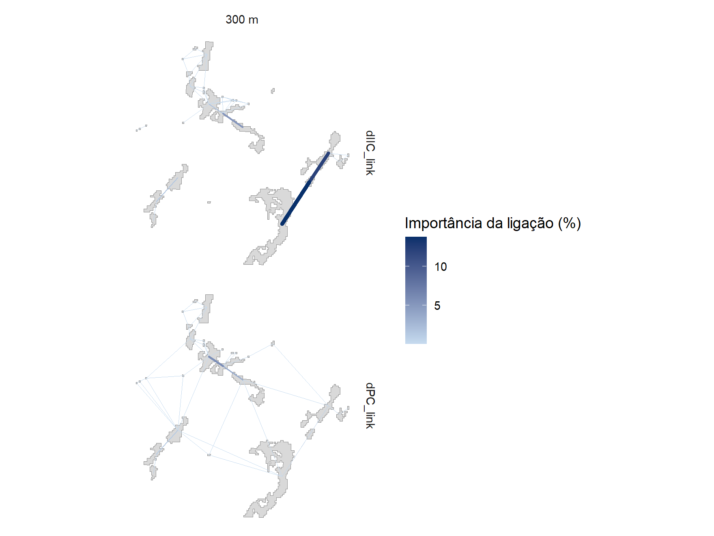

Capítulo 11 Resistência e ligações
Os índices do capítulo anterior usam a distância em linha reta e tratam todas as ligações como iguais. Este capítulo troca a distância pelo custo de atravessar a paisagem e mede a importância de cada ligação.
Resistência e distância de menor custo
A distância em linha reta trata toda a matriz como igual. Uma pastagem, um
canavial e uma rodovia, porém, não oferecem a mesma dificuldade a quem se
desloca entre fragmentos. resistance_surface() converte o mapa de uso de um ano
em uma superfície de custo: cada classe recebe um custo por metro percorrido
(1 equivale à distância euclidiana), e Inf torna a classe uma barreira. Os
valores abaixo são apenas ilustrativos; na prática, vêm da literatura ou de
especialistas para a espécie de interesse:
custos <- c("3" = 1, "4" = 1, "11" = 2, "12" = 3, "9" = 5, "21" = 8, "15" = 10,
"20" = 20, "39" = 20, "41" = 20, "25" = 50, "24" = 100, "33" = Inf)
resistencia <- resistance_surface(mapas, year = 2024, resistance = custos, default = 20)
resistencia$plot
Rodovias, represas e outras barreiras podem entrar como linhas ou polígonos
sf em barriers, com custo próprio ou intransponíveis. cost_distance() mede
então o menor custo acumulado de borda a borda entre os fragmentos, e a matriz
entra em land_connectivity() no lugar da distância euclidiana. Os limiares
passam a ser dados em custo:
custo <- cost_distance(poligonos, resistencia)
conectividade_custo <- land_connectivity(poligonos, max_dist = 1500, distance = custo,
metric_patch = c("IIC", "PC"), build_plot = FALSE)Matrizes de distância de outras fontes também são aceitas, como as tabelas
From, To e Distance de Makurhini::distancefile().
Ligações que sustentam a rede
Com link_importance = TRUE, cada ligação recebe a queda do índice quando só
ela é removida. Ligações com caminho alternativo de mesmo custo valem zero; as
de maior valor são os elos insubstituíveis da rede:
conectividade_ligacoes <- land_connectivity(poligonos, max_dist = 300,
metric_patch = c("IIC", "PC"), p_ref = 0.05, d_ref = 300, link_importance = TRUE)
conectividade_ligacoes$link_plot